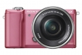

器材库 > APS及其以下画幅可换镜头数码相机 > α5000

规格总览
产品类型
APS画幅可换镜头数码相机
发布日期
2014-01-14
影像规格
影像传感器
Exmor APS HD CMOS
影像传感器尺寸
23.2×15.4mm
有效像素
2010万
色彩空间
sRGB，AdobeRGB（特丽魅彩色彩技术）
静态图像尺寸
3：2 L（20M）：5456 x 3632 M（10M）：3872 x 2576 S（5M）：2736 x 1824；16：9 L（17M）：5456 x 3064 M（8.4M）：3872 x 2176 S（4.2M）：2736 x 1536
静态图像格式
JPEG, RAW, RAW+JPEG
静态图像质量
JPEG标准，JPEG精细，RAW，RAW+JPEG
画幅比
3:2, 16:9
短片尺寸
AVCHD：1920×1080 （50i）, AVCHD：1920×1080 （50i）, AVCHD：1920×1080 （25p）, AVCHD：1920×1080 （25p）, MP4：1440 x1080 （25 fps）, VGA：640×480 （25 fps）
短片格式
AVCHD, MP4
防抖系统
镜头防抖（OSS镜头）
镜头和对焦
镜头卡口
Sony E
对焦系统类型
快速智能自动对焦（进化的对比度检测自动对焦）
对焦点
25 点
对焦模式
单次AF，连续AF，DMF，手动对焦
AF辅助灯
有
手动对焦
支持
曝光控制
测光系统
1200区测光
测光范围
0EV~20EV
曝光模式
P（程序自动曝光）, 场景选择, A（光圈优先自动曝光）, S（快门速度优先自动曝光）, M（手动测光曝光）, 自动（高级自动/增强自动）, 智能自动, 扫描全景（2D）, 动态影像
快门类型
电子控制，纵走式，焦平面快门
快门速度
1/4000秒 - 30秒，B门
闪光同步速度
1/160秒
曝光补偿
±3EV以1/3EV级调整
ISO感光度
自动（ISO 100-16000），范围：ISO 100-16000
白平衡
日光, 白炽灯, 闪光灯, 阴天, 自定义, 阴影, 自动, 水下, 荧光灯（冷白色）, 荧光灯（日光白色）, 荧光灯（日光）, 荧光灯（暖白色）, 色温/滤光片
自拍
10秒, 2秒
连拍
最快约3.5张/秒（速度优先连拍模式下）；连拍模式下：最快约2.5张/秒
闪光灯
内置闪光灯
弹出式
闪光模式
自动, 强制闪光, 禁止闪光
闪光指数
约GN4（ISO 100， 以米为单位）
闪光补偿
±2EV以1/3EV级调整
闪光同步模式
后帘同步, 慢速同步
取景器/显示屏
LCD类型
彩色TFT LCD
LCD尺寸
3.0英寸
LCD像素
46万
视野率
100%
LCD特性
翻转屏
亮度调节级数
手动（±2.0级）/ 晴朗天气
文件输入/输出
存储卡
MS/MS PRO记忆棒, SD/SDHC, SDXC
数据接口
USB2.0
视频/音频接口
Micro HDMI 输出
无线功能
Wi-Fi, NFC
电源
电池
可重复充电电池NP-FW50（随机附送）
续航能力
约420张（LCD，CIPA标准）
机身规格
颜色
银色, 黑色, 粉红色, 白色
尺寸
109.6×62.8×35.7mm
重量
210g
其它
配件端口
遥控线
工作温度
0-40℃
fishz2014-12-22 23:074.69 分
操作性 4.50功能性 4.50美观性 5.00趣味性 5.00耐用性 4.50性价比 5.00解像力 4.50色彩还原 4.50
产品图 / 样片
α5000